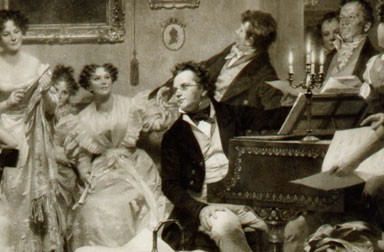

L’origen de les Schubertíades es troben en vida de Franz Schubert,
quan un grup d’amics integrat per músics, pintors, poetes i melòmans
es reunien a Viena per a conèixer i gaudir de les obres de Schubert i
altres compositors del moment. Organitzaven també excursions pels
boscos i compartien llargues sessions de lectura, on comentaven les
obres de grans poetes com Goethe, Heine i Schlegel.
Les condicions polítiques i socials que van trencar Àustria a principis del segle XIX expliquen la formació, a l’època de Schubert, de petits grups múltiples més o menys clandestins, i que es comuniquen entre ells de manera intermitent permetent als seus membres resistir a l’ofec ambiental. Aquests petits grups calorosos es converteixen ràpidament en el lloc de la vertadera vida al marge de la vida real. Entre ells, el cercle de "Schubertiades”.
En aquest grup de "Schubertiades", en Shubert no és el cervell de la comunitat, encara és menys el simple animador com volia definir-lo la llegenda, ell és el seu veritable cor; per això el grup pren espontàniament el seu nom del compositor.
S'ha d'entendre que a l'època en què vivia Schubert, la creació de societats privades, concerts o d'altres, i els cercles literaris o amistosos, corresponen a una necessitat vital i psicològica de calor humà i supervivència intel·lectual; és el significat d'aquestes reunions el que engendrarà les "Schubertiades".
Per tant, l’existència d’aquests petits grups ocupa un lloc important en la vida de Schubert. Això és un cas bastant únic a la història de la música, el d'una estreta connexió entre l'amistat, el cercle de amics i la creació d’un geni individual.
El naixement i la progressió de les "Schubertiades" òbviament no haurien estat possibles si no haguessin correspost a una necessitat essencial de la psicologia schubertiana: una necessitat primordial de comunió "a la nosaltres", vinculada a un sentiment profund i nostàlgic de paradís perdut, que resulta en un autèntica dificultat per existir, per afirmar el "jo".
El primer cop que apareix el terme de Schubertiada de la ploma d’un amic íntim de Schubert, és carta de Schober a Spaun datada el 14 de novembre de 1821. Però aquest terme ja circulava des de feia temps a l’entorn proper al compositor.
Les Schubertiades s’han convertit, des de l’any 1821, en una autèntica institució ... i les Schubertiades càlides marquen la vida de cadascun dels amics del "grup Schubert".
Aquell a qui no li agradi el vi, les dones o el cant, serà un neci toda la seva vida
Després de la mort de Schubert als 31 anys d’edat, els seus amics van conservar el costum de les Schubertíades, però amb el pas dels anys només es celebraven dos cops l’any, per commemorar el dia del naixement i la mort de l’artista. Als anys 70 del segle XX es varen reiniciar aquestes trobades en el poble vienès de Hohenehms amb molt èxit. A partir d’aquí, la idea s’ha anat estenent per diversos països fins arribar al Vallès Oriental de la mà del director català Jordi Piccorelli. L’objectiu de les programacions de les Schubertíades pretén rememorar l’atmosfera que es devia crear en aquelles primeres reunions d’amics al voltant d’un conjunt de concerts i un repertori musical molt adequat en la intimitat de l’església romànica de Sant Pere de Vilamajor.